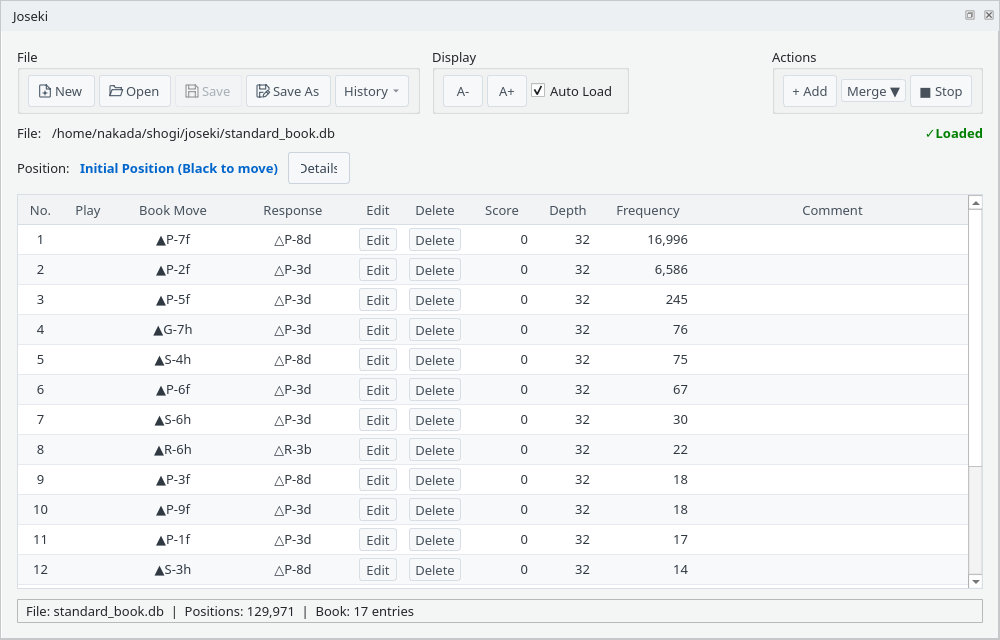
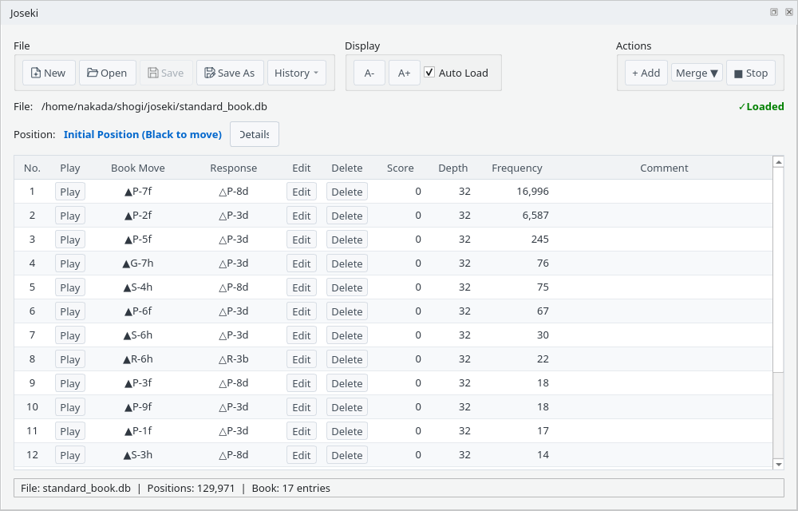
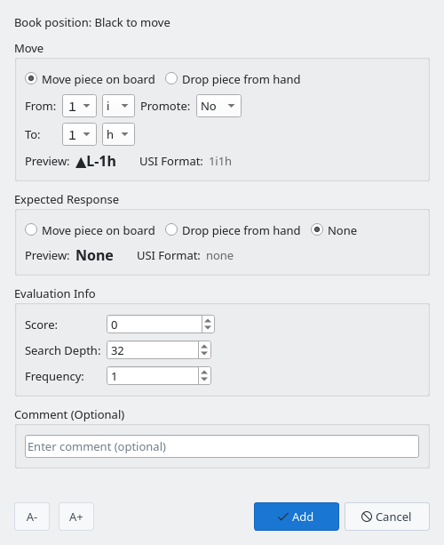
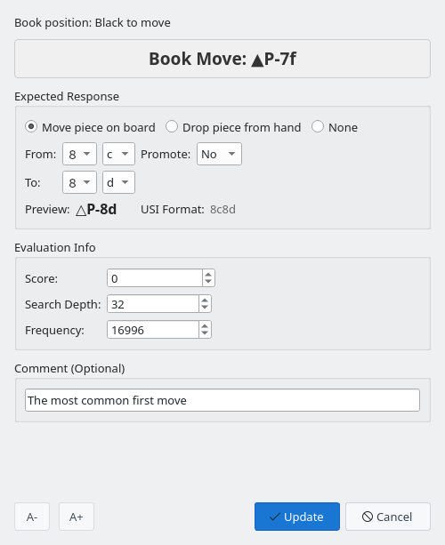
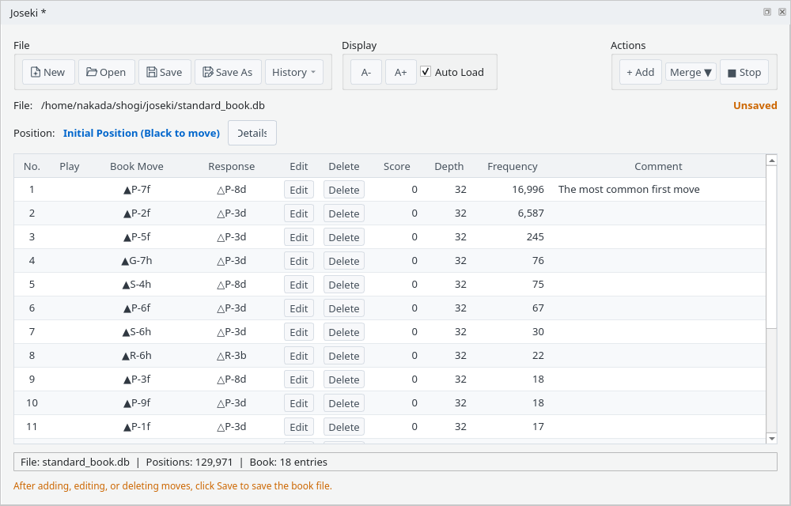
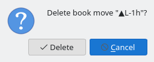
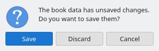
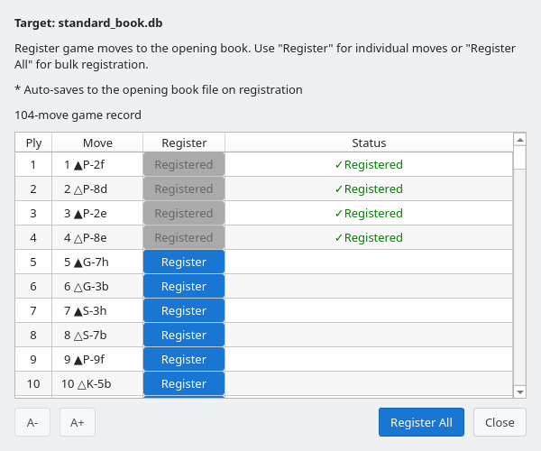

View and edit YaneuraOu-format opening books
Screenshots were captured on Linux with the English interface.
Open a book file in the Joseki window and see the book moves for the displayed position
Choose View → Joseki to show the Joseki window. At first it sits in the tabs at the bottom of the main window. If the table is cramped, enlarge the panel or turn it into a separate window (see the Docks guide).
Click Open and choose a YaneuraOu-format (#YANEURAOU-DB2016) book file (.db), such as the standard_book.db bundled with YaneuraOu. New creates an empty book, and History opens a recently used file. With Auto Load checked, the last file is loaded the next time the window is shown.

Joseki window: the initial position with standard_book.db open
The book moves registered for the displayed position are listed in the order they appear in the file.
When you select a move in the game record or a game advances, the table switches to the book moves of that position. Move numbers are ignored, so the same position always shows the same book moves.
Details shows the SFEN of the position and of the book entry. ■ Stop pauses the book display and ▶ Resume restarts it. The bottom line shows the file name, the number of positions and the number of book moves for this position. A hint is shown inside the table when no book file is open or the position has no book moves.
During a game, play book moves on your own turn
During a game, buttons appear in the Play column on your turn. Click one, or double-click the row, to play that book move (promotion follows the book). The move is recorded in the game record just like a move made on the board.
On the engine's turn, in engine-versus-engine games and outside games, the Play column is empty and book moves cannot be played.

During a game: Play buttons on your turn play the book move
Add, edit and delete book moves, then save the book file
+ Add adds a book move to the displayed position. Choose Move piece on board or Drop piece from hand, set the squares and check the preview. None can be chosen for the response.
Add stays disabled while the move cannot be played in the position. If the move is already registered, you are asked whether to overwrite it.

Add Book Move: check the move in the preview and add it
Edit changes the response, score, search depth, frequency and comment (the move itself cannot be changed). Right-click a row for a menu with Play, Edit, Delete and copying the move.
After a change, Unsaved and a reminder to save appear.

Edit Book Move: change the score, search depth, frequency and comment

After editing: the comment is shown with Unsaved and a reminder to save
Delete asks for confirmation and removes the book move.
Save (overwrite) or Save As writes the changes to a book file. If you switch files with New, Open or History, or close the Joseki window or the application while changes are unsaved, you are asked whether to save them.

Delete confirmation

Prompt when there are unsaved changes
Register the moves of a game record in the book
Choose Merge ▼ → From current game or From game file (KIF) to list the main-line moves of the game (both sides). Register adds one move, Register All adds them all.
A new move is registered with no response, score 0, depth 0 and frequency 1; a move already in the book gets its frequency increased by 1. Registering saves the book file immediately, together with any other unsaved changes. For a new book that has not been saved yet, you choose where to save it first. ✓Registered marks the moves registered since the file was opened.

Merge: register the moves of the game one by one or all at once